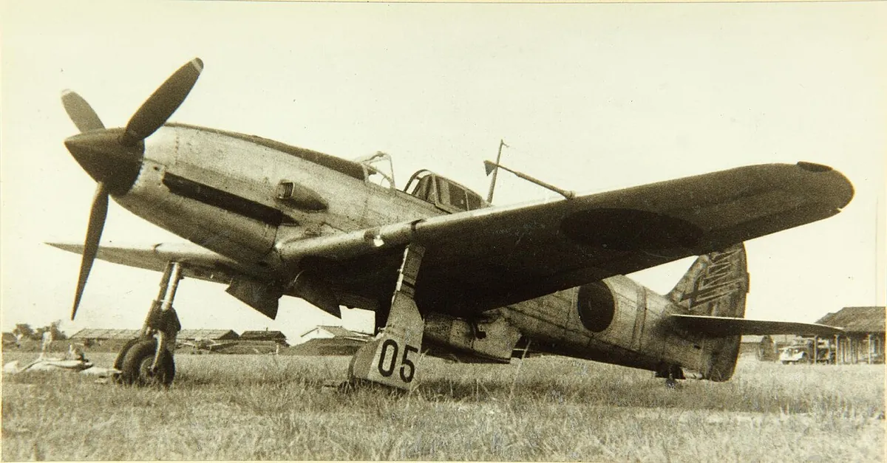

Ki-61 operations · 1942–1945
The Ki-61 Hien was the IJAAF’s distinctive inline-engined fighter. Its German-influenced powerplant and slim fuselage made it look unlike other Japanese fighters, and it served in harsh campaigns including New Guinea, the Philippines and homeland defence. A good Ki-61 model starts with the Sentai and theatre: natural metal early aircraft, mottled New Guinea fighters, dark green late-war machines, B-29 interceptor routes or survivor/reference subjects.

Role & strengths
- Imperial Japanese Army Air Force inline-engined fighter and interceptor
- New Guinea, Philippines, China, Okinawa, Home Defence and B-29 interception routes
- Long nose, ventral radiator, narrow fuselage, wing guns and Sentai tail markings
- Natural metal, green mottle, brown/green field camouflage and late dark green over grey
- Tropical fading, chipped paint, exhaust staining, radiator grime, dust and repair panels
Key theatres
- New Guinea heavy-weathering route
- Philippines and late-war IJAAF operations
- Home Defence / B-29 interception routes
- Survivor and restored-reference route
Specification Ki-61-I
Survivor/reference today
Ki-61 references use survivors, restorations and period photos. Use them for shape, radiator, cockpit and landing gear, but verify wartime paint and Sentai markings separately.
View referencesTimeline highlights
Build this Ki-61 as…
Pick Sentai, theatre and finish first. New Guinea, Philippines, Home Defence, natural metal and restored-reference routes all need different paint and weathering logic.
Aircraft identity
Ki-61 Ko, Otsu, Hei and Tei armament/detail fits vary. Check nose guns, cannon, radiator, exhaust and tail markings before committing.
Ki-61 finishes vary heavily by theatre. Natural metal, mottled field paint and late dark green should not share the same weathering recipe.
Paint scheme cards
Natural metal route with panel variation, red Hinomaru and strong tail markings.
New Guinea/Philippines route with field-applied paint and high surface variation.
Late Home Defence route with worn dark green, exhaust and radiator grime.
Weather radiator, wing roots, cowling, exhausts, tyres and access panels logically.
Campaign cards
Hard tropical route with mottle, dust, fading, chipping and rough field maintenance.
Late combat route with dark green finish, replacement panels and Sentai identity.
B-29 interception route with homeland markings and late-war wear.
Restored route for shape and detail checks, with paint accuracy caution.
Build difficulty and related guides
Medium-high. Inline-engine shape, radiator, finish and markings need careful planning.
High. Ko/Otsu/Hei/Tei armament and detail differences matter.
High. Mottle, field paint and natural metal routes can look excellent or quickly overdone.
Kawasaki Ki-61 Hien Sentai and IJAAF units
Sortable Ki-61 cards covering New Guinea, Philippines, Home Defence, B-29 interception, natural metal and survivor/reference routes.
Ki-61 Hien operating map
Airfield info
Click a marker to show linked Ki-61 unit cards and modelling notes.
Campaign timeline
Survivors
Books and reference sources
Ki-61 Hien build guide
Ki-61 Hien videos, photos and archive material
Media replaces the old separate walkaround tab: cockpit, exhaust, undercarriage, markings, survivor references, archive imagery and video cards are grouped here.